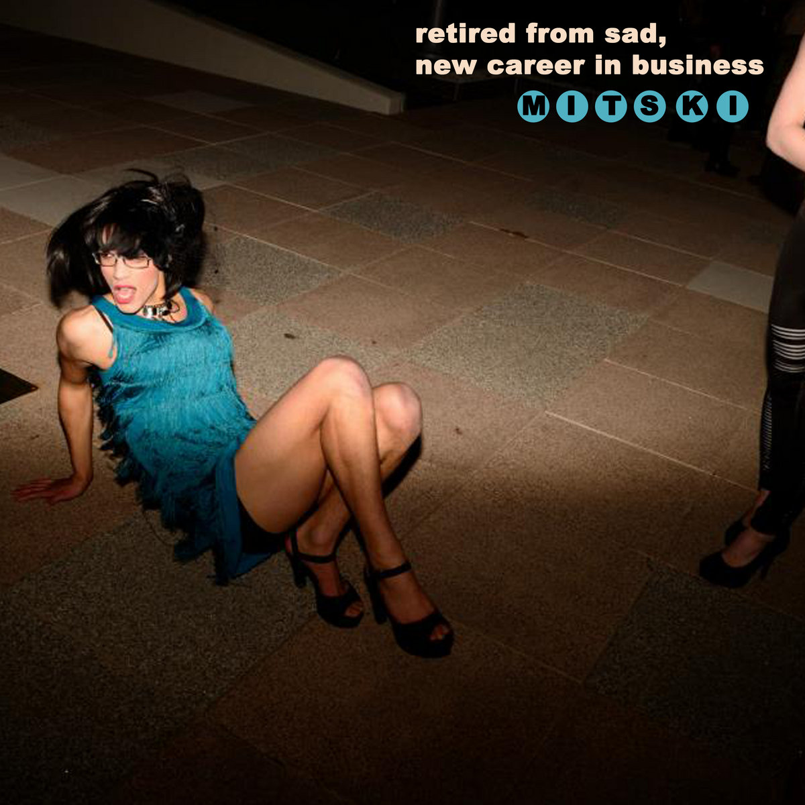
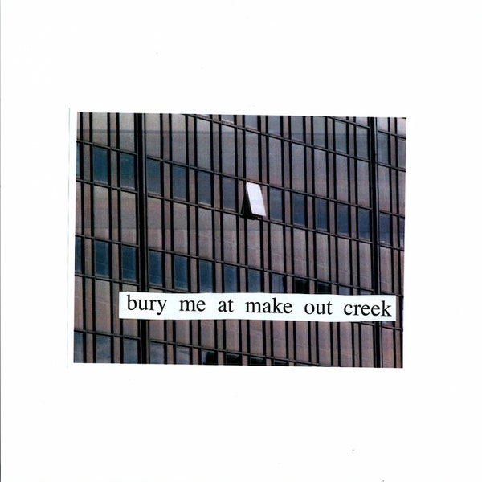

| Tous les albums | |||
|---|---|---|---|
| Couverture de l'album | Nom de l'album | Nombre de chansons | Date de sortie |
| Lush | 9 | 2012 | |
|  | Retired from sad, new career in business | 11 | 2013 |
|  | Bury me at Makeout Creek | 10 | 2014 |
| Puberty 2 | 11 | 2016 | |
| Be the Cowboy | 14 | 2018 | |
| Laurel Hell | ??? | 2022 | |
| Le top 5 | |||
|---|---|---|---|
| Couverture de l'album | Titre de l'oeuvre | Nombre de fois jouée | Durée |
| Washing Machine Heart | 162,958,423 | 2:08 | |
| Nobody | 150,716,699 | 3:13 | |
| Me and My Husband | 101,035,217 | 2:17 | |
| First Love / Late Spring | 84,338,256 | 4:38 | |
| I Bet on Losing Dogs | 64,300,138 | 2:50 | |